Developing a Disassembly Tutorial¶
In this session you will:
Collaborate in your groups to safely disassemble a computer.
Develop a disassembly tutorial detailing each step and documenting the process sequentially with photos and descriptions.
Disassembly & Assembly Tutorial Template:¶
Use the Disassembly Process section of the provided Disassembly & Assembly Tutorial Template to organize your work clearly and systematically.

Important: You will continue adding to this same template throughout the course. By the end, it will detail the disassembly process, hardware components and assembly process. Together, this will become the final product.
Disassembly instructions¶
Disassembly breaks a device into separate parts.
Materials required:
One working PC
Anti-static wrist strap
Anti-static mat
Anti-static bags (various sizes)
Technician’s toolkit
Plastic cup or box to organize screws, nuts, bolts
Procedure:
Step |
Instructions |
|---|---|
1. Unplugging |
✓ Unplug the power cord from the PC. |
2. Open the case |
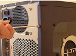 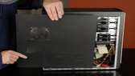 |
3. Disconnect all the connectors |
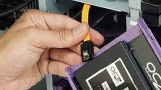 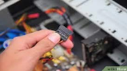 |
4. Remove the fan |
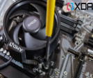 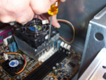 |
5. Remove the power supply |
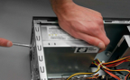 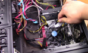 |
6. Remove HDD and optical drive |
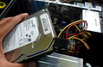 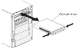 |
7. Remove RAM modules |
To remove the RAM: |
8. Remove expansion cards |
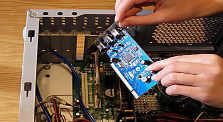 |
9. Remove motherboard |
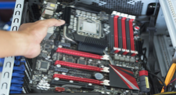 |